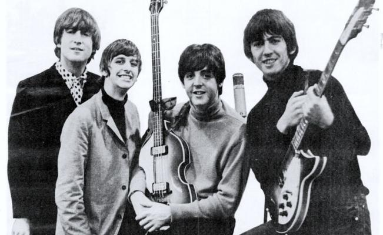
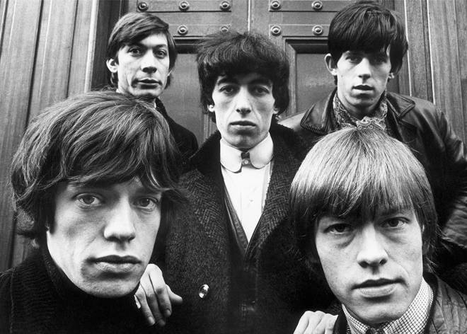
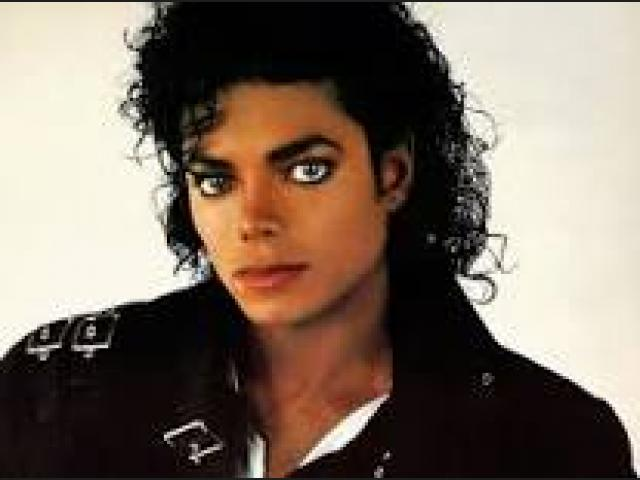
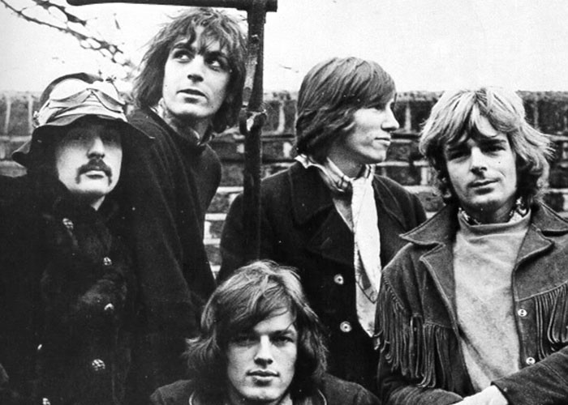
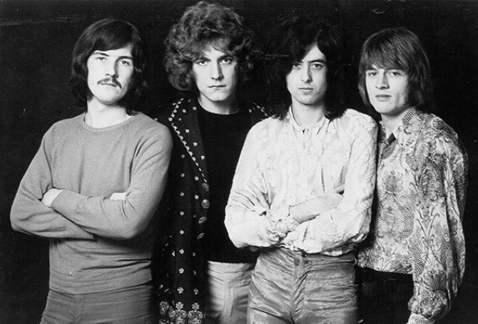

ARTISTAS
THE BEATLES
The Beatles fue una banda de pop/rock inglesa activa durante la década de 1960, y reconocida como la más exitosa comercialmente y la más alabada por la crítica en la historia de la música popular.12345 Formada en Liverpool, estuvo constituida desde 1962 por John Lennon (guitarra rítmica, vocalista), Paul McCartney (bajo, vocalista), George Harrison (guitarra solista, vocalista) y Ringo Starr (batería, vocalista). Enraizada en el skiffle y el rock and roll de los años 1950, la banda trabajó más tarde con distintos géneros musicales, que iban desde las baladas pop hasta el rock psicodélico, incorporando a menudo elementos clásicos, entre otros, de forma innovadora en sus canciones. La naturaleza de su enorme popularidad, que había emergido primeramente con la moda de la «Beatlemanía», se transformó al tiempo que sus composiciones se volvieron más sofisticadas. Llegaron a ser percibidos como la encarnación de los ideales progresistas, extendiendo su influencia en las revoluciones sociales y culturales de la década de 1960.
THE ROLLING STONES
The Rolling Stones es una banda británica de rock originaria de Londres. La banda se fundó en abril de 19622 por Brian Jones, Mick Jagger, Keith Richards, Bill Wyman, Ian Stewart y Charlie Watts.2 Brian Jones fue despedido en junio de 1969, falleciendo tres semanas después, siendo reemplazado por el guitarrista Mick Taylor, que dejaría el grupo en 1975 y sería a su vez reemplazado por Ron Wood. Con el retiro de Bill Wyman en 1993 se incluyó al bajista Darryl Jones que, aunque toca con la banda desde la grabación del álbum Voodoo Lounge en 1994, no es un miembro oficial.
MICHAEL JACKSON
Michael Joseph Jackson12 (Gary, Indiana, 29 de agosto de 1958-Los Ángeles, California, 25 de junio de 2009) fue un cantante estadounidense, compositor, productor discográfico, bailarín, actor y filántropo.345 Llamado el «Rey del Pop»,67 sus contribuciones a la música, la danza y la moda,89 junto con su vida personal publicitada lo convirtió en una figura mundial en la cultura popular durante más de cuatro décadas. Varios autores lo reconocen como la estrella de música pop más exitosa en el mundo.10 Sin embargo, su música incluyó una amplia acepción de subgéneros como el rhythm & blues (soul y funk), rock, disco, hip hop y electrónica.
PINK FLOYD
Pink Floyd fue una banda de rock británica, considerada un icono cultural del siglo xx y una de las bandas más influyentes en la historia de la música, que obtuvo gran popularidad gracias a su música psicodélica que evolucionó hacia el rock progresivo y rock sinfónico con el paso del tiempo. Es conocida por sus canciones de alto contenido filosófico, la experimentación sónica, las innovadoras portadas de sus discos y sus elaborados espectáculos en vivo. Sus ventas sobrepasan los 300 millones de álbumes vendidos en todo el mundo,45 97,5 millones de ellos solamente en los Estados Unidos.
LED ZEPPELIN
Led Zeppelin fue un grupo británico de hard rock fundado en 1968 por el guitarrista Jimmy Page, quien había pertenecido a The Yardbirds. La banda estuvo integrada por John Paul Jones como bajista y teclista, al vocalista Robert Plant y a John Bonham a la batería (que había coincidido con Plant en The Band of Joy).
| TOP 10 ARTISTAS DE LA MÚSICA ( ALL STYLES) | ||||
|---|---|---|---|---|
| 1 | The Beatles | |||
| 2 | The Rolling Stones | |||
| 3 | Michael Jackson | |||
| 4 | Madonna | |||
| 5 | Elton John | |||
| 6 | Led Zeppelin | |||
| 7 | Pink Floyd | |||
| 8 | Rihanna | |||
| 9 | Robert Johnson | |||
| 10 | AC/DC | |||